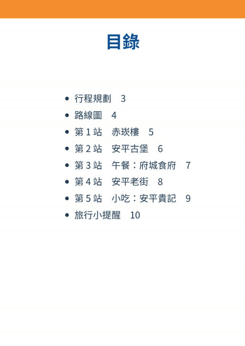
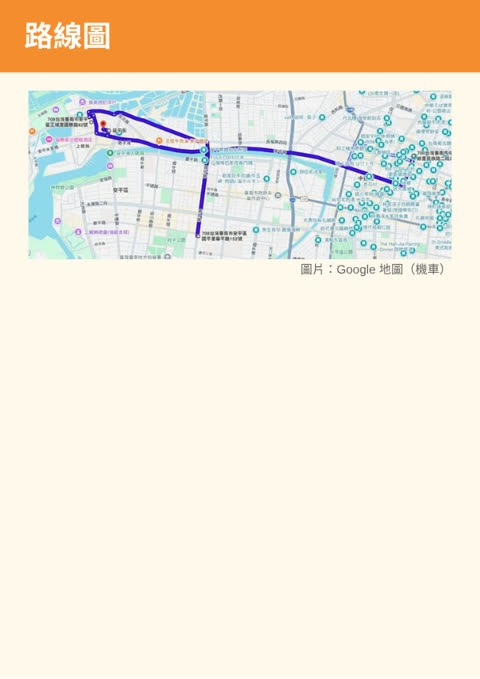

1加一張新的紙
忘記怎麼做？查技能百科按 ＋ 多一張紙，打上標題「目錄」
只加這一頁就好。後面做路線圖、行程規劃時，再用一樣的方法多加一頁。
📖 名詞小卡
- 新增頁面
- ：頁面下方這顆按鈕，按一下多一張新的頁面
- 刪除頁面
- ：多按了？點頁面上方的垃圾桶刪掉
- 頁面
- ：Canva 裡的一張紙，手冊的一頁就是一個頁面
- 標題
- ：一頁最上面最大的字，說明這頁是什麼
＋ 新增頁面
這一步檢查
👩🏫 老師示範一張新的紙，標題在最上面中間點圖可以放大

- 1按 ＋ 只加一頁
- 2標題打「目錄」，放在最上面中間
- 3其他頁之後一樣的方法再加
2做目錄
忘記怎麼做？查技能百科第 2 頁做目錄：看一眼就知道手冊有什麼
手冊分三塊：先看全貌 → 景點介紹 → 最後收尾。目錄列出封面、目錄以外的每個章節。
先看全貌
封面目錄行程規劃路線圖景點介紹
第 1 站第 2 站…美食也算一站最後收尾
旅行小提醒封底1章節名
手冊有哪些章節，一行一個
手冊有哪些章節，一行一個
2照順序
從行程規劃寫到旅行小提醒
從行程規劃寫到旅行小提醒
3靠左
每行都靠左邊
每行都靠左邊
4項目符號
每行前面有小圓點
每行前面有小圓點
頁碼先不用打，之後景點頁做好了再補。
📖 名詞小卡
- 目錄
- ：列出手冊有哪些章節的一頁，翻開就知道要去哪裡找
- 項目符號
- ：每一行最前面的小圓點，用來一行一行列出東西；按工具列上這顆
- 靠左對齊
- ：每一行的字都從左邊開始排；按工具列上這顆，按到字靠左就停
這一步檢查
👩🏫 老師示範目錄頁點圖可以放大
- 1每個章節一行一個，從行程規劃寫到旅行小提醒
- 2靠左，每行前面有項目符號
- 3頁碼這一步先不用打，景點頁做完再補
3用 Google 地圖畫路線
忘記怎麼做？查技能百科這一步檢查
👩🏫 老師示範地圖畫出整條路線點圖可以放大

- 1全部的站照順序都在地圖上
- 2交通方式選機車，只是用來畫線、查分鐘
- 3看得到一整條連起來的路線
4截圖貼到路線圖頁
忘記怎麼做？查技能百科把地圖截圖，貼到新的一頁（路線圖）
先按 ＋ 新增一頁，標題打「路線圖」，做法跟第 1 步一樣。
地圖下面打一行「圖片：Google 地圖」。
📖 名詞小卡
- 截圖
- ：把螢幕上看到的畫面拍成一張圖
- 右下角小視窗
- ：截完圖，螢幕右下角會跳出的小視窗；點它才能打開剪取工具，按「複製」
- 圖片來源
- ：這張圖是從哪裡來的，寫出來是尊重原作者
這一步檢查
👩🏫 老師示範路線圖頁點圖可以放大
- 1地圖夠大，放在標題下面
- 2地圖下面有一行小字：圖片：Google 地圖
- 3地圖旁邊可以再寫每一段的路線文字
5排行程時間表
忘記怎麼做？查技能百科新增一頁做時間表，下面 3 樣一定要有
先按 ＋ 新增一頁，標題打「行程規劃」。
1景點
每一站的名字
每一站的名字
2時間
幾點到、停多久
幾點到、停多久
3看得出順序
第 1 站、第 2 站…照順序排
第 1 站、第 2 站…照順序排
看你的旅遊文件做。站與站中間的交通方式和時間先空白，寫站點就好。
這一步檢查
👩🏫 老師示範行程規劃頁：補完交通後的樣子點圖可以放大

- 1景點：第 1 站到第 5 站的名字
- 2時間：幾點到、停留多久
- 3順序一看就懂；站與站中間的交通方式和分鐘，你先空白（老師示範是補完後的樣子）
6繳交給老師
忘記怎麼做？查技能百科做完了，在 Canva 右上角按 繳交給老師
1右上角按「繳交給老師」
2選擇你的老師
3按「傳送」
不用複製連結，也不用貼到學習單。
📖 名詞小卡
- 繳交給老師
- ：Canva 右上角的按鈕，按了就把作品送到老師那裡
交之前檢查
還沒做完？先交，之後可以再交一次。
恭喜你已經做完今日的作業，可以遊玩！
👩🏫 老師示範今天做完的樣子點圖可以放大

- 1封面
- 2目錄、行程規劃、路線圖都有
- 3全部做好再按繳交給老師